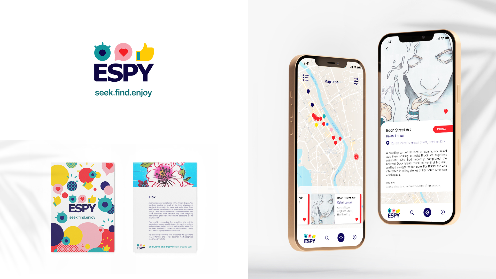

biography
Kia ora, I am Vanessa Mace and I will soon graduate with a Graduate Diploma of Design majoring in
Interface Design. In 2020 I took the leap and returned to university as an adult student and never
looked back.
“You can’t use up creativity. The more you use, the more you have.” – Maya Angelou
I have loved art and design for as long as I can remember and always found a way to be creative while working in other industries. I came to realise that design is the career that I want to pursue and studying for my Graduate Diploma at The University of Waikato has pushed me outside of my comfort zone and has been hugely rewarding. I have gained experience, skills and understanding that would not have been possible had I not decided to return to university study. I have found my strengths to be in branding, UX/UI design and print design and have been fortunate to commence freelance work in this field. If anything, I wish I had taken this step years ago.
project description
New Zealand is a beautiful country, rich in culture and diversity. Local Councils throughout the motu see value in celebrating our diversity through public art, an investment in place making, measured by livability that also stimulates community pride. Public art connects individuals to their neighbours and their shared history through documentation and celebration. It makes cultural heritage a tangible community asset, it can reduce stress, encourage new thought and conversation, and contribute to happiness. This is the joy of discovering work that speaks to you.
The Espy app connects users with creative works in their area, no matter the location or the available time, there is something new to find. Public art reflects our society, there are many different types of people and there are many different types of art. The trick is to find the art that connects with the viewer, this is where Espy comes in. There is sure to be something that spurs engagement and creates a sense of belonging in every community. Take some time to explore the urban environment, experience the works, discover the stories, find the thing that brings joy, and celebrate it. Seek. Find. Enjoy.
The Espy App

For more information contact us
Email: degreeshow@waikato.ac.nz
Faculty phone: 0800 924 528
Faculty information: cs.waikato.ac.nz